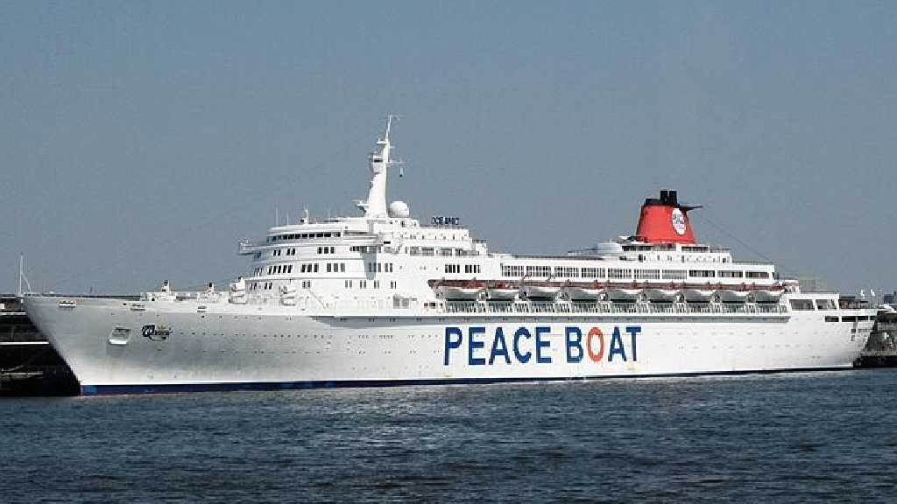
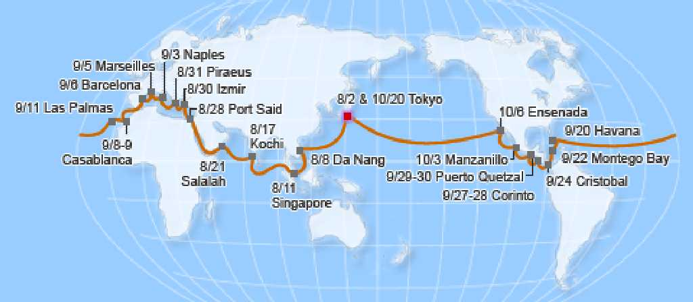

Cruise ship SS Oceanic

Tonnage:38,772GT Length:238.4m Beam:29.4m Draught:8.6m Speed:18knots(Max27) Capacity:1,600passengers Crew:560

Around The World in 80 days Cruise Report August 2 2010 - October 20 2010 47,040km 18knots
Tokyo Đà Nẵng Hội An Singapore Johor Bahru Kochi Salalah Gulf of Aden Jeddah Suez Canal Port Said Alexandria Izmir Efes Athens Poseidon Naples Capri Marseille If Island Bonifacio Barcelona Parc Güell Santa Eulàlia Montserrat Gibraltar Casablanca Rabat Canaria Habana Montego Bay Colon Panama Canal Panama City Corinto Leon Viejo Leon Puerto Quetzal Guatemala City Antigua Manzanillo Ensenada Tokyo
 Google Earth
Google Earth

 AI解説
AI解説


 趣味の旅行 Travel
趣味の旅行 Travel